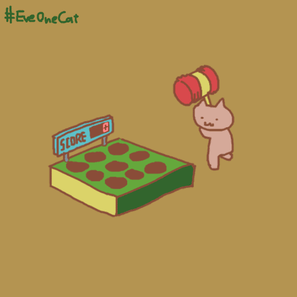

Javascript 学习起来真的不是一般的痛苦，简直是折磨人。 看来学习的时候只能与我自己的blog结合起来。 1.听课制作笔记，然后每一个练习项目都当成页面笔记存进blog。 2.当学习到我blog用得上的地方的时候，拿过来直接使用。 这样应该才能够激发我的学习兴趣。 太过枯燥的东西，太容易让我丧失学习兴趣了。 我的性格又只能以兴趣为主导的去学习。 不是学霸的我，还是要在学习方法方面多下功夫才行╮(╯﹏╰）╭ 